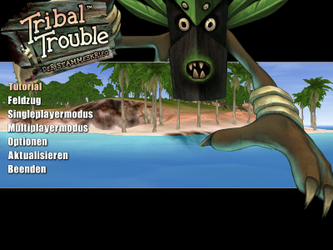
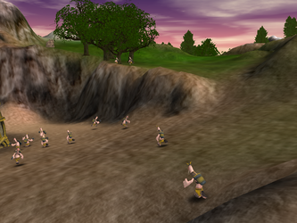

Tribal Trouble
Dieser Artikel wurde für die folgenden Ubuntu-Versionen getestet:
Ubuntu 16.04 Xenial Xerus
Zum Verständnis dieses Artikels sind folgende Seiten hilfreich:
Vor langer Zeit feierte eine Horde Wikinger wieder einmal ihren letzten erfolgreichen Raubzug. Unglücklicherweise waren sie so betrunken, dass sie sich auf dem Ozean verirrten und schließlich an den Strand einer Tropeninsel gespült wurden. Es gefiel ihnen dort so gut, dass sie sich entschlossen zu bleiben, sehr zum Ärger der dort ansässigen Eingeborenen.
2014 wurde der Quellcode des zuvor kommerziell vertriebenen Strategiespiel unter der GPL2 veröffentlicht.
|  |  |
| Menü | Spielszene |
Installation¶
Um das Spiel zu installieren, lädt man von der Projektseite  die Dateien TribalTroubleSetup.sh und registration herunter. Erstere Datei muss ausführbar gemacht werden [1] und anschließend leitet man die Installation ein [2] (bei Bedarf kann der Installationspfad angepasst werden):
die Dateien TribalTroubleSetup.sh und registration herunter. Erstere Datei muss ausführbar gemacht werden [1] und anschließend leitet man die Installation ein [2] (bei Bedarf kann der Installationspfad angepasst werden):
./TribalTroubleSetup.sh --target ~/tribal #Installiert das Spiel ins Homeverzeichnis
Nachdem das Skript alle benötigten Dateien installiert hat, kopiert man die zuvor heruntergeladene Datei registration in das Verzeichnis ~/.TribalTrouble. Anschließend kann das Spiel aus dem Installationsverzeichnis über tribaltrouble gestartet [3] und bei Bedarf ein Menüeintrag [4] erstellt werden.
Handbuch¶
Im Spielverzeichnis befindet sich eine Anleitung im HTML-Format (Manual.html). Hier sind alle wichtigen Steuerungsmöglichkeiten mittels Maus und Tastatur erklärt.
Problemlösungen¶
Kein Sound¶
Das Spiel bringt einige Bibliotheken mit sich, darunter auch OpenAL, welche für die Soundeffekte verwendet wird. Da die mitgelieferte Version bereits sehr alt ist und mit aktuellen Ubuntu-Versionen nicht kompatibel ist, muss diese mit Bibliotheken des Systems ersetzt werden. Nachfolgende Befehle müssen im Spielverzeichnis ausgeführt werden:
mv gamedata/data-1/native/.svn/text-base/libopenal.so.svn-base{,.bak}
ln -s /usr/lib/i386-linux-gnu/libopenal.so.1 gamedata/data-1/native/.svn/text-base/libopenal.so.svn-base 
Infobox¶
| Tribal Trouble - Der Stammeskrieg | |
| Originaltitel: | Tribal Trouble |
| Genre: | Strategie |
| Sprache: |     |
| Veröffentlichung: | 2005 |
| Publisher: | Halycon |
| Systemvoraussetzungen: | 700 MHz Prozessor / 128 MB RAM / 500 MB freier Festplattenspeicher / Grafikkarte >= 32MB RAM |
| Medien: | CD / Download |
| Strichcode / EAN / GTIN: | 4042588000658 |
| Läuft mit: | Java |
- Erstellt mit Inyoka
-
 2004 – 2017 ubuntuusers.de • Einige Rechte vorbehalten
2004 – 2017 ubuntuusers.de • Einige Rechte vorbehalten
Lizenz • Kontakt • Datenschutz • Impressum • Serverstatus -
Serverhousing gespendet von